Опыт работы
ЦРПР Университета Иннополис, Департамент разработки технологических решений
▾
R&D отделы наплавки и сварки — разработка роботизированных комплексов для автоматизированной 3D-печати металлами (Direct Metal Deposition, DMD) и сварки одним или несколькими роботами-манипуляторами.
- Проектирование интерфейсов управления промышленным роботом-манипулятором Kawasaki
- Подготовка пакетов для управления промышленными и коллаборативными манипуляторами через ROS2
- Подготовка 3D моделей оборудования и URDF-описаний для интеграции в ПО
- Проектирование изделий в САПР для установки периферии и вспомогательных инструментов
- Docker-деплой и bringup-файлы для воспроизводимости
- Robot Inspection Library — библиотека для оценки точности и повторяемости промышленных роботов (см. раздел «Проекты»)
- Robot Inspector — инструмент инспекции манипуляторов на основе данных лазерного трекера (см. раздел «Проекты»)
Институт ИИ Университета Иннополис
▾
В рамках научно-исследовательской деятельности Института ИИ Университета Иннополис была сформирована студенческая команда из 8 человек для разработки двух проектов:
- Формирование и руководство командой из 8 человек: распределение задач, регулярные встречи, наставничество
- Взаимодействие с научными руководителями и координация исследовательской повестки
- Техническое руководство обоими направлениями: архитектура систем, code review, интеграция
Избранные проекты
UR10e Voice Assistant
▾
- Организация работы команды, встречи, контроль за задачами, наставничество
- Спроектировал общую архитектуру ROS-системы для решения задачи
- Подготовил state machine для последовательностей распознавания, перемещения и захвата
- Интегрировал UR10e и механический захват через MoveIt и сервисы планирования движения
- Сделал воспроизводимый деплой через Docker для amd и arm архитектур, описал bringup-файлы
- Подготовил алгоритмы CV для распознавания AprilTag и ориентации системы в пространстве
- Спроектировал и изготовил крепления для периферии, собрал и подключил аппаратную часть проекта
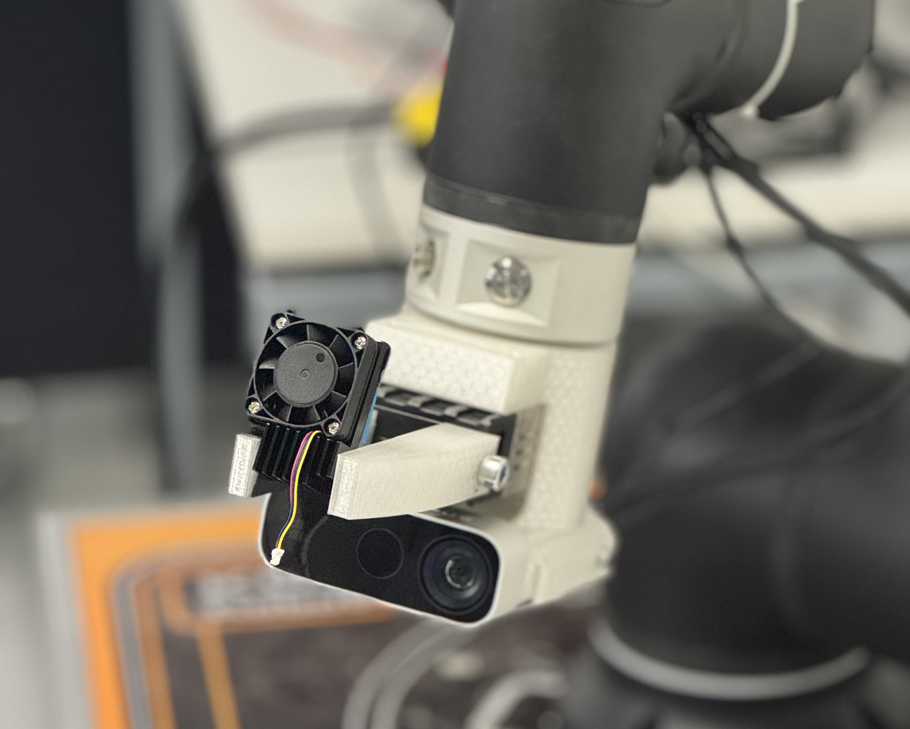
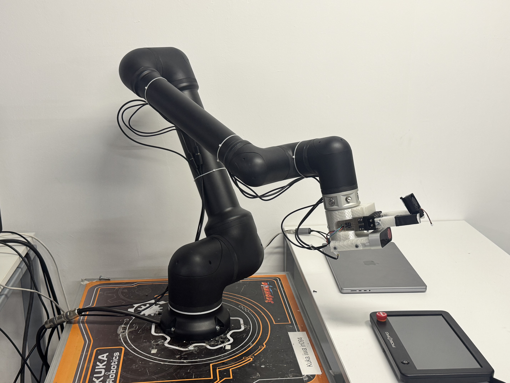
Mobile Robot Platform
▾
- Организация работы команды, встречи, контроль за задачами, наставничество
- Подготовил URDF/Xacro описание робота и интегрировал в ROS 2
- Подготовил сцены и конфигурацию Gazebo-симуляции
- "Fine-tuning" Nav2 и SLAM пайплайн на основании данных двух лидаров
- Сделал воспроизводимый деплой через Docker для amd и arm (Nvidia Jetson), описал bringup-файлы
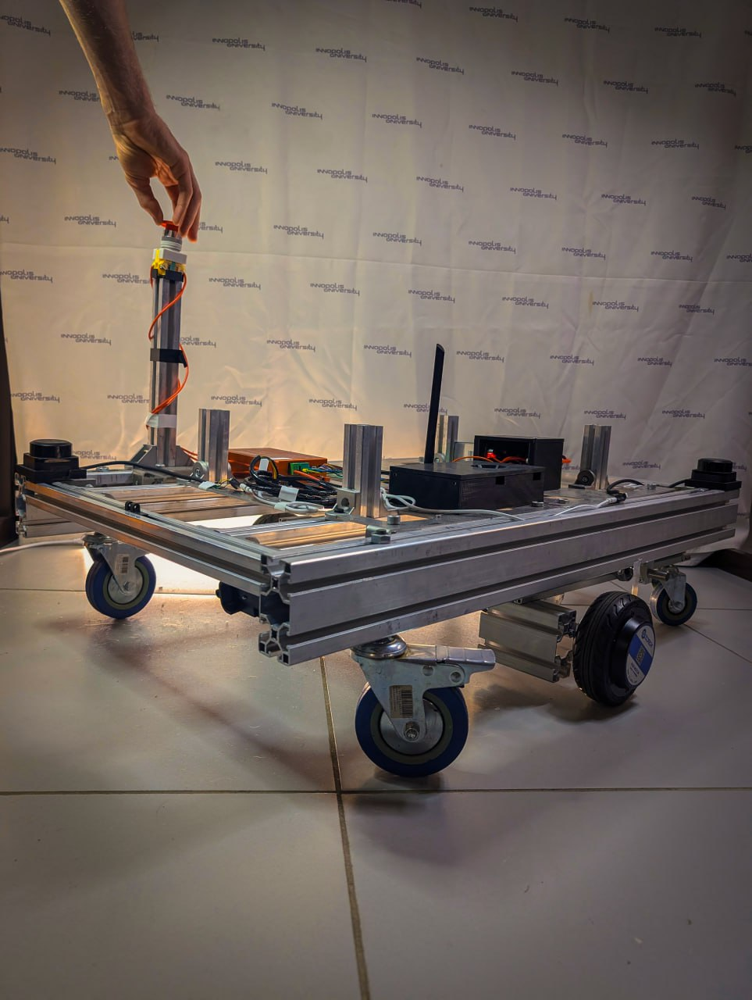

LLM Swarm Control
▾
- Организация работы команды, встречи, контроль за задачами, наставничество
- Проектирование общей архитектуры проекта и взаимодействия LLM с классическими алгоритмами
- Подготовка 2D-симуляции мультиагентной системы и интеграция в ROS 2
- Оптимизированная Nav2 система для одновременного управления 20 роботами
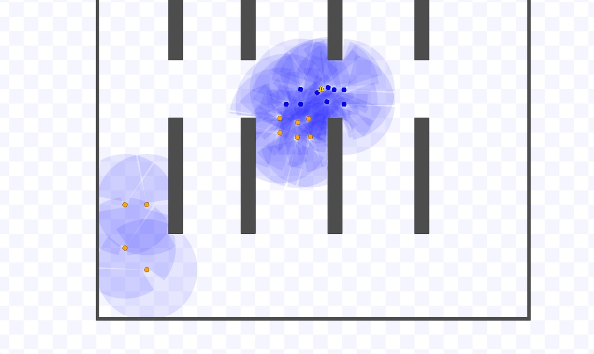
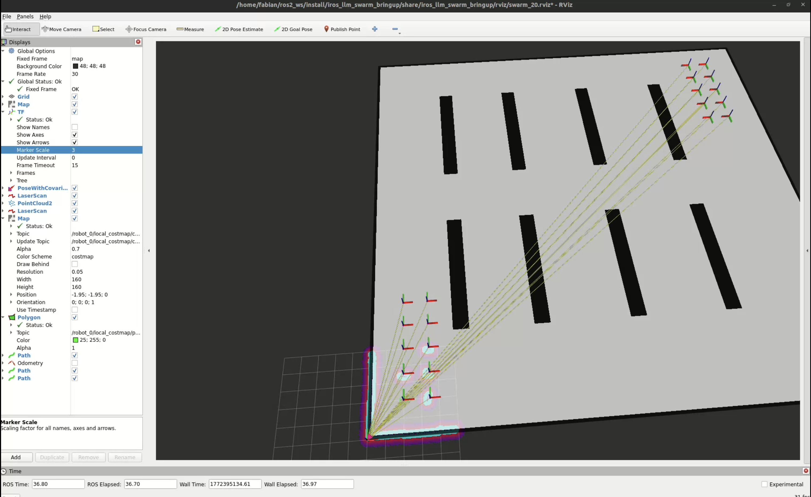
Unitree A1 Gesture Control
▾
- Организация работы команды, встречи, контроль за задачами, наставничество
- Docker-деплой для amd/arm (Nvidia Jetson), CUDA, ONNX, Unitree SDK
- Спроектировал общую ROS 2 архитектуру взаимодействия нод и bringup-файлы
- Реализовал ROS 2 ноды и сообщения для высокоуровневого управления собакой
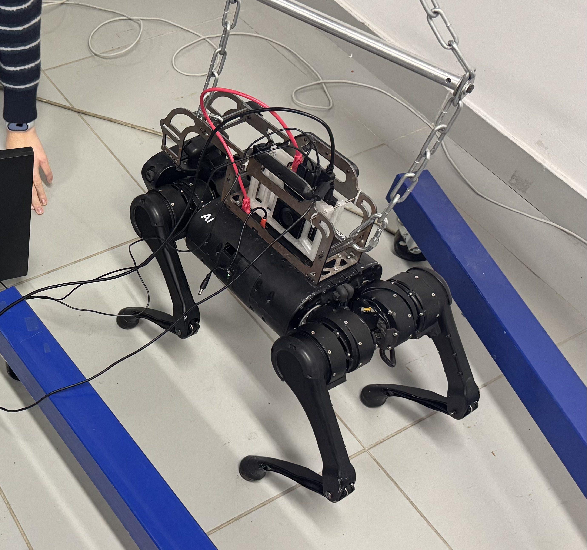
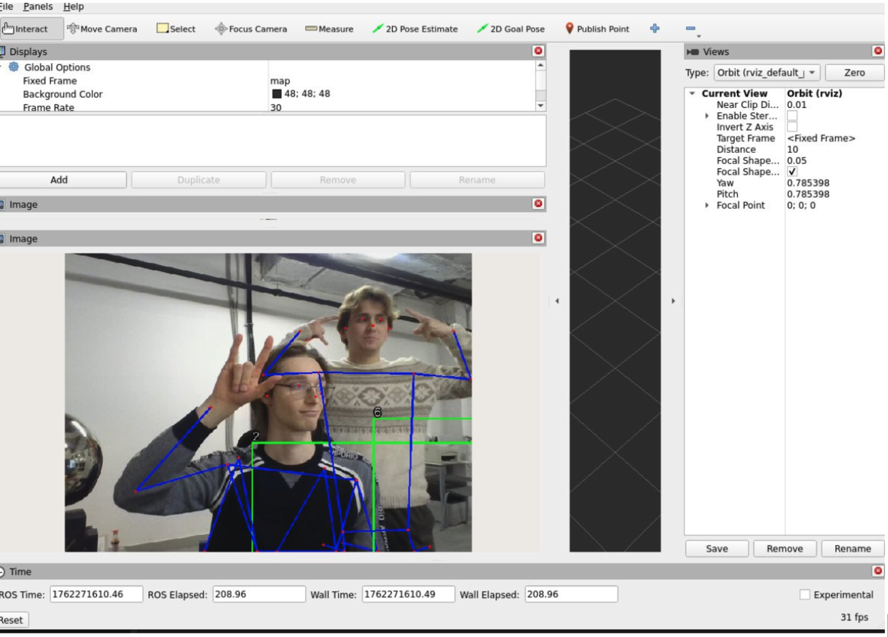
Умный бак для агродронов
▾
- Отбор студентов и организация работы внутри студенческой команды
- Проектирование в САПР и изготовление опытных образцов
- Изготовление и сборка собственной печатной платы с SMD и DIP компонентами
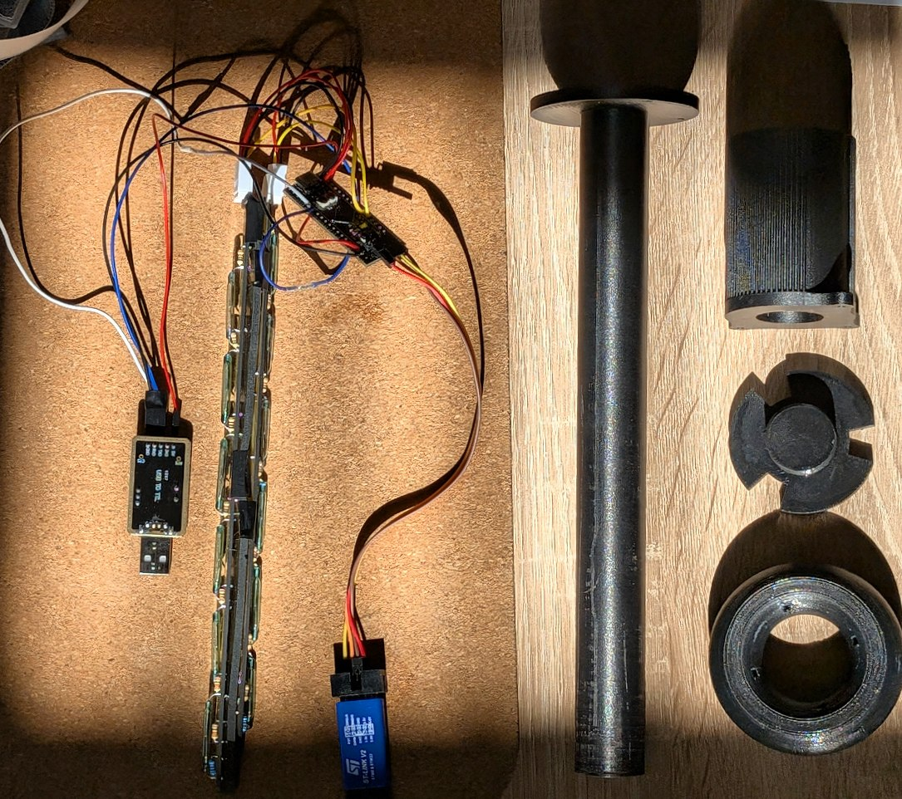
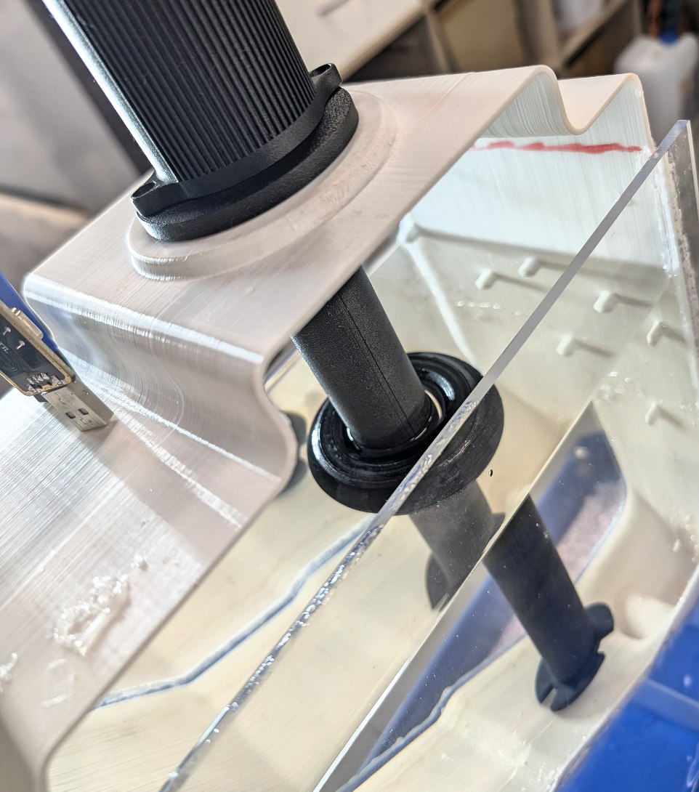
Robot Inspection Library
▾
- Спроектирована архитектура приложения для анализа данных с необходимой точностью и гибкостью функционала
- Разработан инструмент на языке Python для обработки измерений и подготовки отчётов
- Подготовлена тестовая программа для движения манипулятора
- Спроектированы крепления для установки маркеров лазерного трекера
- Подготовлен отчёт по результатам исследования точности манипулятора
Plug-n-Play Inverted Pendulum
▾
- Восстановлена работа аппаратной части лабораторной установки, заменены повреждённые компоненты и обслужена механика
- Спроектирована и изготовлена плата для управления системой на базе ESP32
- Подготовлена архитектура python-пакета и реализован код для обмена данными между компьютером и платой управления маятником
- Подготовлен цифровой двойник маятника с помощью MJCF файлов описания и симулятора MuJoCo
Интерактивная демонстрация робототехнических систем на мероприятии университета
Фестиваль клубов Университета Иннополис — интерактив для студентов
На базе DWB контроллера для ROS 2 Humble
Band-pass filter — спроектирован и изготовлен полностью самостоятельно
Лидерство и наставничество
Глава лаборатории робототехники
▾
Студенческая лаборатория при Институте робототехники Университета Иннополис.
- 80+ студентов бакалавриата, магистратуры и аспирантуры привлечены к деятельности
- Обновлён и расширен станочный парк лаборатории
- Стажировки для студентов из разных ВУЗов
- 20+ проектов и стартапов запущены на базе лаборатории
- Практические занятия по 10 курсам + воркшопы
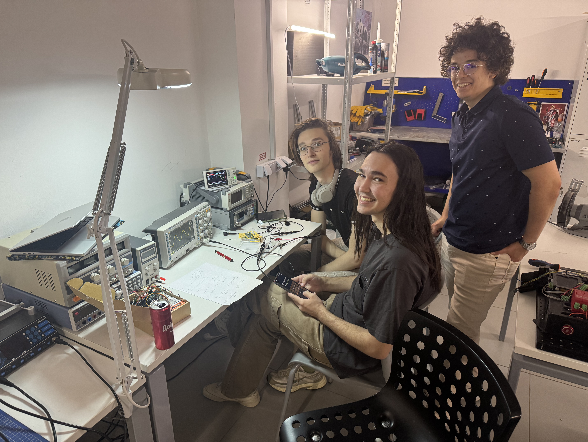


Глава Innopolis Robotics Society
▾
Сообщество робототехники для привлечения студентов к научной и проектной деятельности, участия в соревнованиях.
- 2200+ человек через мероприятия клуба
- 2 инженерные ярмарки, Club Fest, 13+ воркшопов
- Студенческая команда из 20 человек для индустриального проекта с Центром Робототехники
- Победы: ЧиП России по программированию роботов, MTS True Tech, Робокод
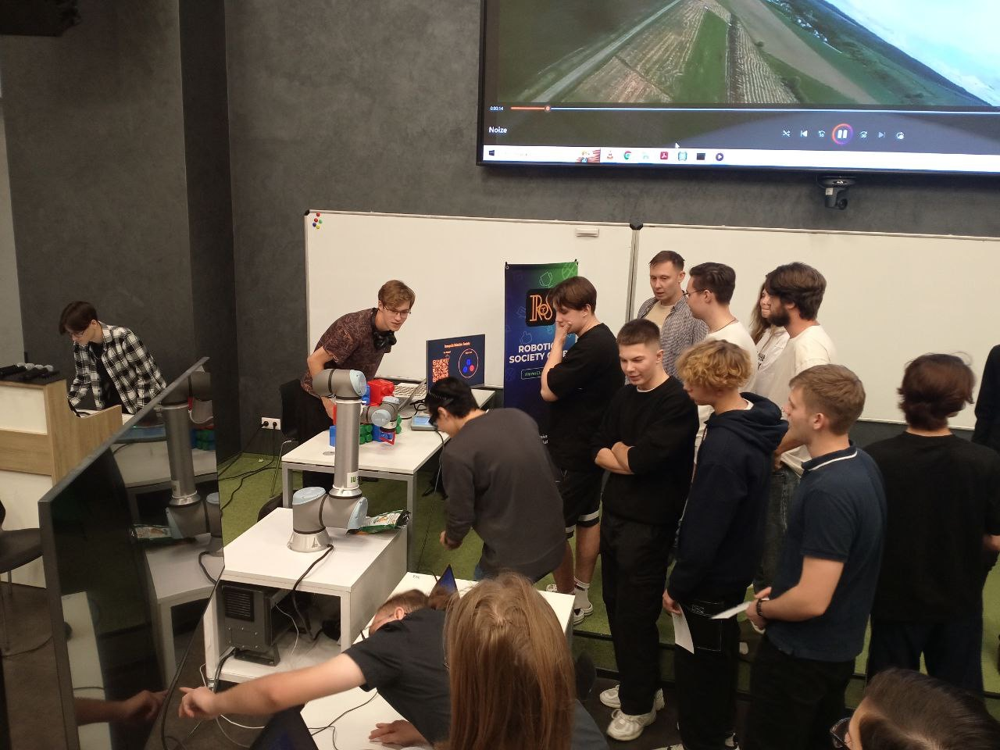

Ассистент преподавателя Sensors & Sensing
▾
Курс для студентов 3-го курса: теория и практика работы с сенсорными системами и обработка данных.
- Добавлена новая лабораторная работа по введению в ROS 2
- Лабораторная по IMU переведена на ROS 2 + Raspberry Pi 5
- Лабораторная по лидарам переведена на Livox Mid-70 (RANSAC, ICP) в ROS 2
- Проверка отчётов и кода студентов
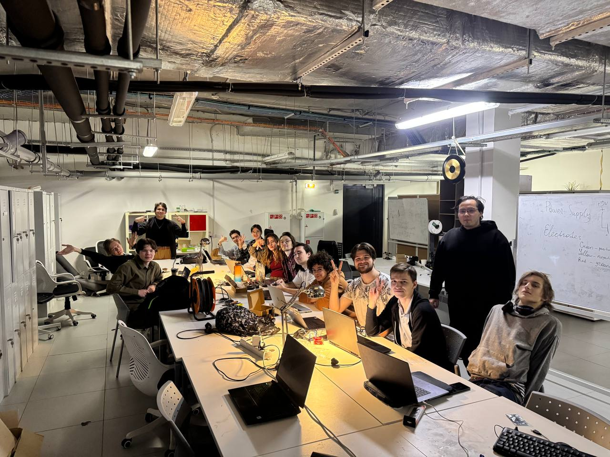
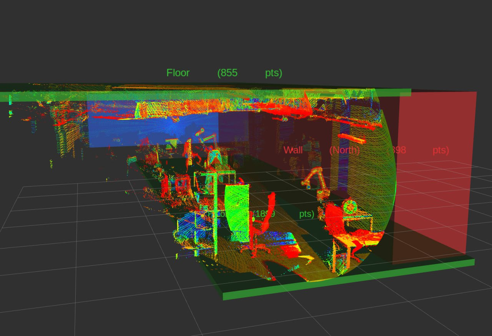
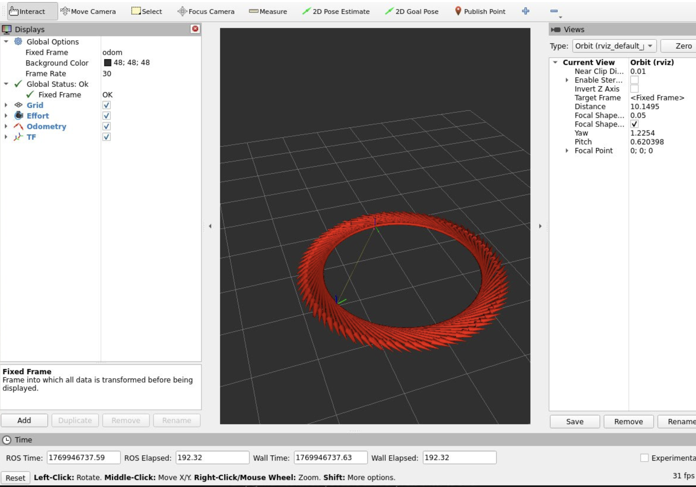
Молодёжные Инженерные Команды
▾
Программа «Кадры для БАС» (Университет 2035) — руководство командами, разрабатывающими решения для заказчиков в области БПЛА.
- Обсуждение и согласование ТЗ с заказчиками
- Поиск, отбор и обучение участников
- 5 команд успешно защитили решения: симуляция, автопосадка в дронопорт, автономная навигация, избегание препятствий
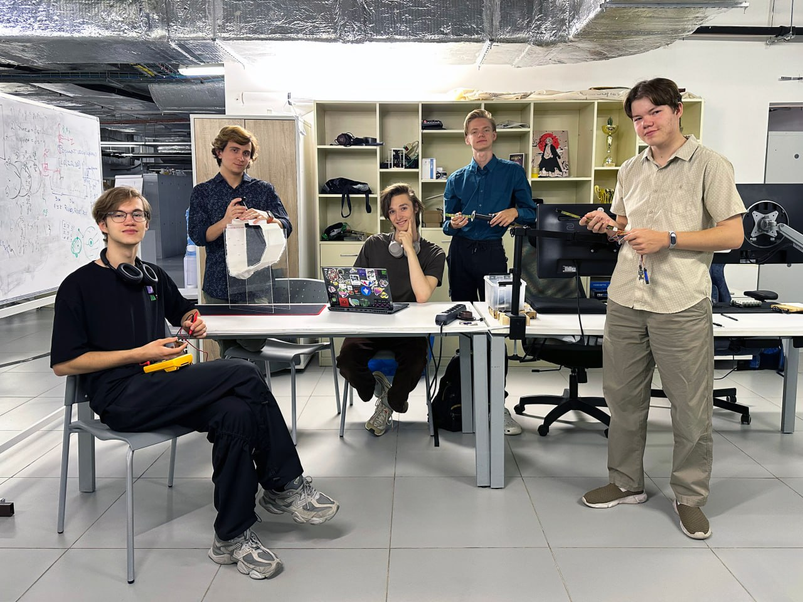
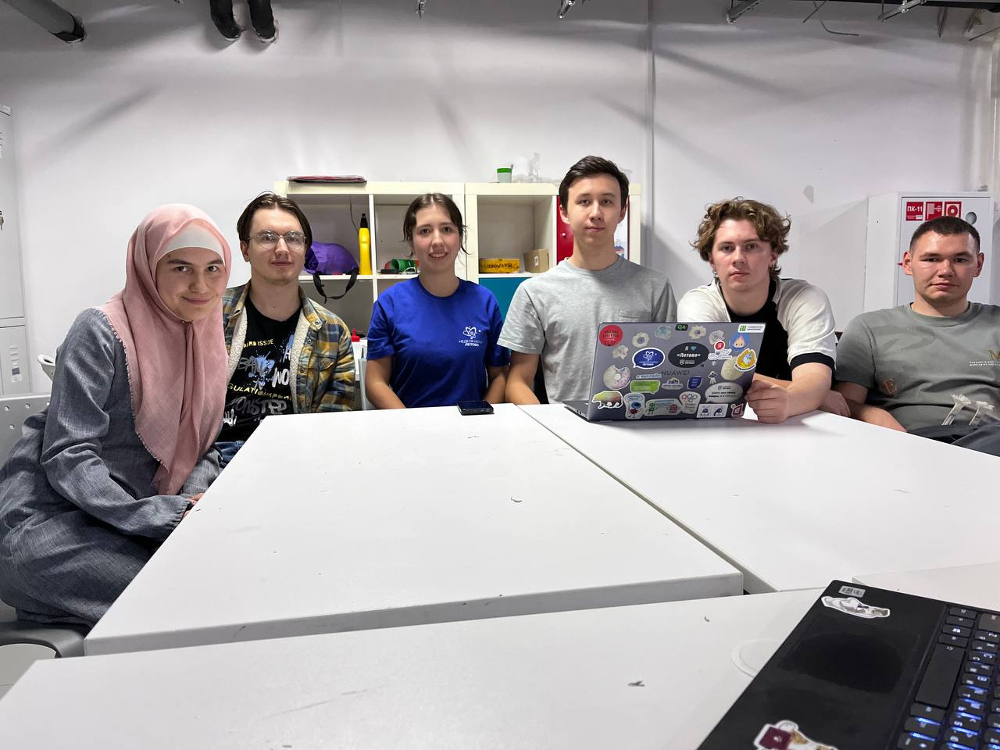